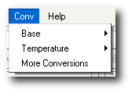

Conv Menu Header
What is the Conv Menu?

What does Conv mean?
Conv is abbreviated for Convert. It's purpose is to convert between common units.
Functions of the Conv Menu:
- Conv > Base Converts the equation between Binary, Decimal, Hexidecimal, and Octal bases.
- Conv > Temperature Converts the equation between Celcius, Fahrenheit, Rankine, and Reaumur temperatures.
- Conv > Other Conversions is a link to onlineconversion.com where there is an extensive list of units to convert from.